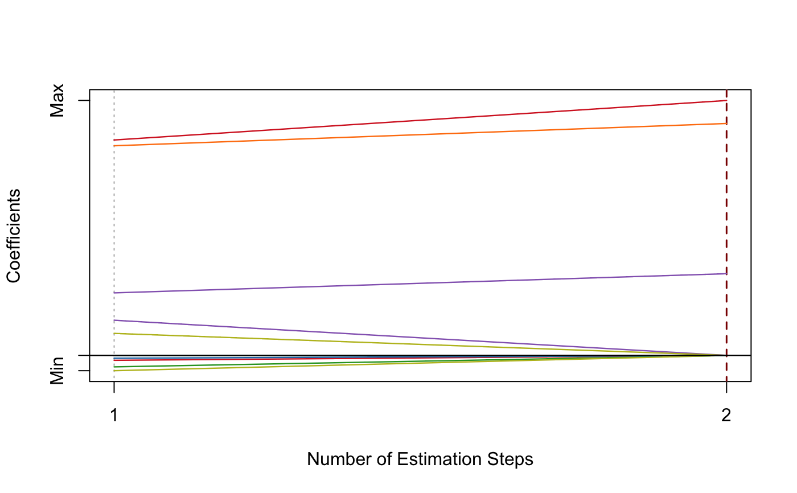

Adaptive MCP-Net
amnet( x, y, family = c("gaussian", "binomial", "poisson", "cox"), init = c("mnet", "ridge"), gammas = 3, alphas = seq(0.05, 0.95, 0.05), tune = c("cv", "ebic", "bic", "aic"), nfolds = 5L, ebic.gamma = 1, scale = 1, eps = 1e-04, max.iter = 10000L, penalty.factor.init = rep(1, ncol(x)), seed = 1001, parallel = FALSE, verbose = FALSE )
| x | Data matrix. |
|---|---|
| y | Response vector if |
| family | Model family, can be |
| init | Type of the penalty used in the initial
estimation step. Can be |
| gammas | Vector of candidate |
| alphas | Vector of candidate |
| tune | Parameter tuning method for each estimation step.
Possible options are |
| nfolds | Fold numbers of cross-validation when |
| ebic.gamma | Parameter for Extended BIC penalizing
size of the model space when |
| scale | Scaling factor for adaptive weights:
|
| eps | Convergence threshhold to use in MCP-net. |
| max.iter | Maximum number of iterations to use in MCP-net. |
| penalty.factor.init | The multiplicative factor for the penalty
applied to each coefficient in the initial estimation step. This is
useful for incorporating prior information about variable weights,
for example, emphasizing specific clinical variables. To make certain
variables more likely to be selected, assign a smaller value.
Default is |
| seed | Random seed for cross-validation fold division. |
| parallel | Logical. Enable parallel parameter tuning or not,
default is FALSE. To enable parallel tuning, load the
|
| verbose | Should we print out the estimation progress? |
List of model coefficients, ncvreg model object,
and the optimal parameter set.
dat <- msaenet.sim.gaussian( n = 150, p = 500, rho = 0.6, coef = rep(1, 5), snr = 2, p.train = 0.7, seed = 1001 ) amnet.fit <- amnet( dat$x.tr, dat$y.tr, alphas = seq(0.2, 0.8, 0.2), seed = 1002 ) print(amnet.fit)#> Call: amnet(x = dat$x.tr, y = dat$y.tr, alphas = seq(0.2, 0.8, 0.2), #> seed = 1002) #> Df Lambda Gamma Alpha #> 1 5 0.2826426 3 0.8msaenet.nzv(amnet.fit)#> [1] 2 4 5 35 269#> [1] 2#> [1] 3#> [1] 2.67195plot(amnet.fit)